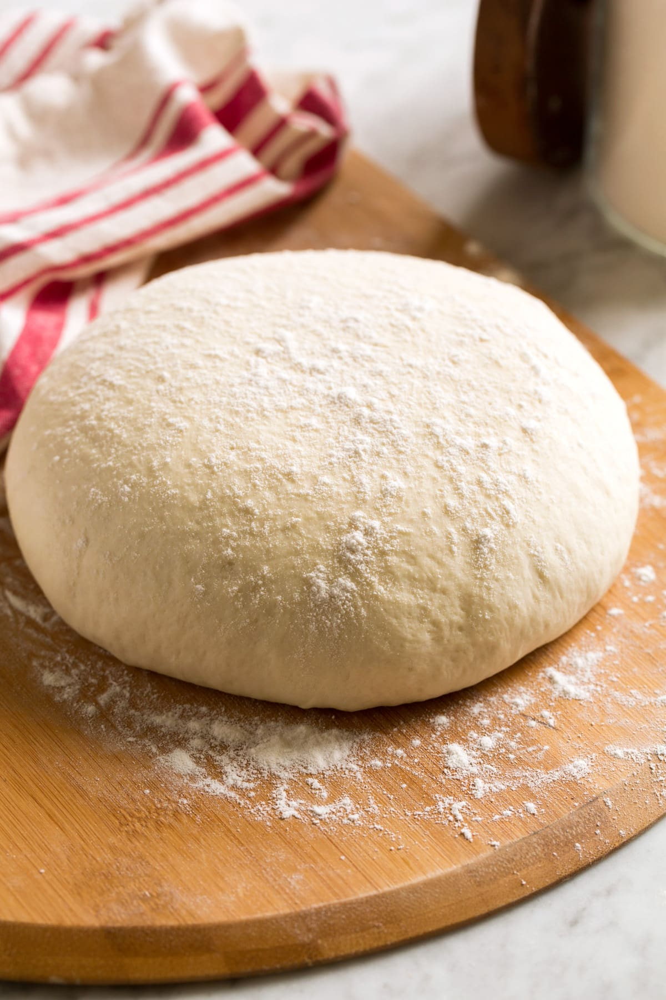

Pizza Dough

Awesome Pizza Dough Recipe
These instructions will tell you how to make a basic, yet awesome
tasting pizza dough.
The key to any recipe around making a dough is having the right
tools available. More precisely having tools to measure and weight
the ingrediants are a must.
List of Ingredients:
- 250 g of White Flour (Or any flour of your choice)
- 9 g of Garlic Salt
- 6 g of quick rise yeast
- 200 g of warm water
- a splash of Extra Virgin Olive Oil
Steps to Prepare the Pizza Dough
- First mix all the dry ingredients together in a large mixing
bowl.
- With the items in the bowl, prior to adding the water and oil
mix the dry ingredients around to make mixing the dough slightly
easier.
- Using your hands and/or a mixer, mix the dough until the wet
and dry ingredients are mixed completely.
- Let the dough rest for 3-5 minutes and then mix the dough again.
This time you'll notice that the dough's composition start to
change as the gluten chains are starting to form in the dough.
- Mix one more time after another 5-10 minutes and then let the
dough rest for an hour as the dough will begin to rise.
- Dust a working space with flour and lightly flour the outside
of the dough until the dough stops sticking to your fingers.
- work the dough by spreading it and flatten the dough by doing
a soft, pounding motion with a closed fist to remove any air
pockets that are in the dough.
- Take a baking sheet and lightly spray it was a canola spray.
Take the dough and spread along the baking sheet, careful to not
stretch the dough too much in any area and tear the dough.
- To finish the pizza, place topping and cooke at 450 deg F for
15 min. or until toppings and cheese have started to attain a
light golden color.